Seiryū-ji, el templo del gran buda (青龍寺)
2012-02-10T09:54:39Z
Durante mi estancia con Ana Sora en Aomori, para visitar el mágico Osorezan y disfrutar del famoso Nebuta Matsuri, fuimos también a ver el templo Seiryū-ji (青龍寺), popular entre los lugareños por albergar el Gran Buda de Showa, del que ya os hablé hace algunos meses (podéis ir al artículo correspondiente pulsando el link). Curiosamente [...]

Durante mi estancia con Ana Sora en Aomori, para visitar el mágico Osorezan y disfrutar del famoso Nebuta Matsuri, fuimos también a ver el templo Seiryū-ji (青龍寺), popular entre los lugareños por albergar el Gran Buda de Showa, del que ya os hablé hace algunos meses (podéis ir al artículo correspondiente pulsando el link).

Curiosamente este santuario es un Betsuin(別院), es decir, como una “sucursal” de un lugar sagrado pero muy lejano para que, de esta manera, la gente que no pueda viajar lejos pueda venir aquí. Concretamente este templo es un “betsuin” del Monte Koya (que está cerca de Kyoto). En el recinto, además de la gigantesca estatua de Buda, encontraremos varios jardines y altares, con varias esculturas y pinturas muy interesantes, y una pagoda. A mi, personalmente, me sorprendió ver muchos molinillos de colores en muchos lugares del templo.

Otra cosa que me gustó de este lugar es que es precioso y apenas hay turistas, apenas vimos alguna que otra pareja de japoneses paseando por la zona. Para llegar a este templo, lo mejor es coger un autobús desde la estación de Aomori, el trayecto tarda 25minutos aproximadamente…¡pero no os despistéis con la hora, el último bus de regreso a la ciudad es a las 17:20!. La entrada cuesta 400yenes. Aquí os dejo con la página oficial del templo, y algunas fotografías más del santuario para que os hagáis la idea de su belleza:


¡¡ BUEN FINDE A TODOS !!
Kokusai dori (国際通り)
2012-02-03T09:51:13Z
Kokusai Dōri es una de las calles más famosas de la ciudad de Naha, la capital de Okinawa, en Japón. Aunque no sea una amplísima avenida concentra en una longitud de 1,6Kilómetros la mayoría de la vida nocturna y de entretenimiento de la ciudad, así como comercios dedicados al turismo y la hostelería. Bares, restaurantes [...]

Kokusai Dōri es una de las calles más famosas de la ciudad de Naha, la capital de Okinawa, en Japón. Aunque no sea una amplísima avenida concentra en una longitud de 1,6Kilómetros la mayoría de la vida nocturna y de entretenimiento de la ciudad, así como comercios dedicados al turismo y la hostelería. Bares, restaurantes y tiendas se suceden a lo largo de esa colorida calle que, tanto por el día, como por la noche, es de las más animadas de la ciudad.

Curiosamente, antes de la II Guerra Mundial, esta era una zona suburbial pero, tras el control estadounidense de la ciudad, fue aquí donde se comenzó a desarrollar el mercado negro entre la gente que había perdido sus casas y negocios. De esta manera, esta calle quedó referenciada como una zona de encuentro y comercio desde entonces. Lo que hizo que, además, fuera una de las más rápidas en recuperarse tras el final de la guerra.

Definitivamente, si estáis buscando un omiyage (o souvenir) tras vuestra visita a Okinawa, debéis buscarlo en esta calle (o colindantes). La verdad es que merece pasear esta vía de principio a fín, está llena de pequeños y graciosos detalles, es difícil de explicar, porque sin tener nada de especial, es un paseo lleno de anécdotas, aunque seguro que me comprenderéis después de haberos dado una vuelta por la zona. Yo de momento os dejo con algunas fotografías de aperitivo  :
:


Como véis, a lo largo de la calle encontramos Shisa de todo tipo

Este establecimiento simula al conocido Castillo de Shuri

El AwaMori es también otro de los elementos típicos de Okinawa

No es el cruce de Shibuya, pero tiene su encanto
¡¡ BUEN FINDE A TODOS !!
El Fuji visto desde el cielo (空から富士山)
2012-01-31T10:00:55Z
Después del éxito que tuvo mi entrada de el Fuji visto desde el Shinkansen que publiqué hace más o menos un año, me he animado a compartir con vosotros estas fotografías de el Monte Fuji visto desde el cielo (空から富士山), las tomé en un trayecto que realicé desde el aeropuerto de Nagasaki hasta Tokyo en [...]
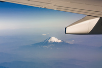
Después del éxito que tuvo mi entrada de el Fuji visto desde el Shinkansen que publiqué hace más o menos un año, me he animado a compartir con vosotros estas fotografías de el Monte Fuji visto desde el cielo (空から富士山), las tomé en un trayecto que realicé desde el aeropuerto de Nagasaki hasta Tokyo en un vuelo de Japan Airlines con mis compañeros de VIDICAM .
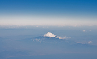
La verdad es que se le ve imponente, destacando entre el resto del paisaje y emergiendo de entre la bruma. En los meses de frío es cuando mejor se le vé, en verano, las nubes está mucho más alto y es mucho más difícil divisar la cima. Para que os hagáis una idea de a qué altura y distancia pasa el avión respecto al monte he intentado hacer una foto teniendo de referencia el ala:
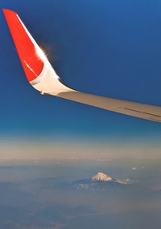
El Fuji, con sus 3776metros de altura es el monte más alto de Japón, y es muy curioso, que sea más o menos del mismo tamaño que el Teide, el monte más alto de España con 3718metros y que también es un volcán. Aquí os dejo otra fotico con el ala del avión como referencia:
No obstante, y aunque verlo un día nublado tiene su encanto, verlo en un día despejado es sencillamente impresionante, como muestra os dejo esta instantánea que mi buen amigo Marc Bernabé me ha cedido para la realización de esta entrada…
¡MUCHAS GRACIAS!
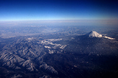
Festival de las linternas de Nagasaki
2012-01-24T08:30:44Z
Ayer, como cada año nuevo lunar, comenzó el Festival de las linternas de Nagasaki(長崎ランタンフェスティバル), que celebra el Año Nuevo chino de una manera especial, ya que esta ciudad tiene mucha influencia de su país vecino debido a que fue una de las pocas que, durante el Sakoku（el cierre de fronteras que hubo entre el 1641 [...]
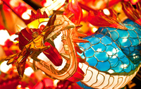
Ayer, como cada año nuevo lunar, comenzó el Festival de las linternas de Nagasaki(長崎ランタンフェスティバル), que celebra el Año Nuevo chino de una manera especial, ya que esta ciudad tiene mucha influencia de su país vecino debido a que fue una de las pocas que, durante el Sakoku（el cierre de fronteras que hubo entre el 1641 y el 1853), aún mantuvo relaciones comerciales con el extranjero, mayormente China (aunque también tuvo mucha relación con los holandeses).
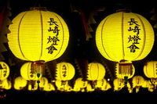
Esta influencia queda patente en su barrio chino y en muchos de sus templos, pero quizá este festival sea la manifestación más clara de este mestizaje sino-japonés. La verdad es que es un momento ideal para ir a Nagasaki, no hace tanto frío como en otras ciudades japonesas más al norte y la ciudad está preciosa, llena de luz y de vida. Afortunadamente, aunque hay mucha más gente que en otras épocas del año, tampoco es agobiante.
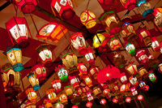
Yo estuve el año pasado en compañía de mis amigos de la productora VIDICAM, tras un largo itinerario por el oeste de Japón, y lo disfrutamos mucho, además tuvimos la oportunidad de asistir (en el Santuario de Suwa), a una ceremonia de Setsubun, que como ya os comenté, es una celebración que aún permanece de cuando los japoneses usaban el mismo calendario lunar que los chinos (que es el que utilizaban antes de adaptarse al calendario gregoriano en 1873).
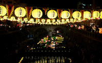
Con la llegada del atardecer, la ciudad se pone (nunca mejor dicho) el traje de luces y, las calles en torno al río Nakashima, sobretodo en las cercanías de Meganebashi (véase la ubicación en Google Maps) se colorean con las luces de las linternas y, las figuras de papel iluminadas con formas de animales y signos zodiacales, se reflejan sobre el agua. Las calles comerciales circundantes también se engalanan, como este Shōtengai del barrio de Suwamachi.
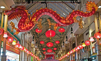
También hay espectáculos callejeros, desfiles y actuaciones en diferentes zonas, así como puestecillos callejeros, toda la ciudad está de fiesta, hasta los templos se visten con farolillos, y la gente, si ya de por sí es acogedora todo el año, lo es aún más, el ambiente festivo se palpa en la atmósfera. No os lo podéis perder si estáis por la zona en estas fechas. El evento dura unas 2 semanas, este año (2012) dió comienzo ayer (23 de Enero) y finalizará el 6 de Febrero, no obstante, para tener más información lo mejor es que os dirijáis a la web oficial del evento, yo, de momento, os dejo algunas fotografías más.
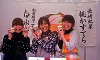
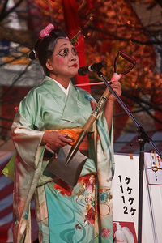
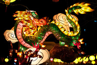
Por supuesto, este año, el dragón es el protagonista
Vídeo de los torbellinos de Naruto
2012-01-17T14:04:39Z
Hace ya varios meses que os hablé de los remolinos de Naruto, de hecho, el personaje principal del manga Naruto, siempre tiene elementos en su vestimenta con forma de espiral, en honor a este fenómeno natural, también conocido como torbellinos de Naruto, y que se produce debido al choque de corrientes marinas en el Mar Interior [...]
Hace ya varios meses que os hablé de los remolinos de Naruto, de hecho, el personaje principal del manga Naruto, siempre tiene elementos en su vestimenta con forma de espiral, en honor a este fenómeno natural, también conocido como torbellinos de Naruto, y que se produce debido al choque de corrientes marinas en el Mar Interior de Seto, entre la isla de Awaji y Tokushima (ver en en Google Maps pulsando aquí). Aprovechando que la última vez que fui me aproximé a ellos en barco, he realizado este vídeo de poco más de un minuto para compartirlo con vosotros. Espero que os guste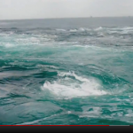
El Castillo de Kokura (小倉城)
2012-02-07T08:32:20Z
El castillo de Kokura (小倉城), es uno de los puntos obligados para el turista en Kitakyushu, aunque es cierto que no es tan espectacular como el castillo de Osaka o el Castillo de Nagoya (y aún menos, el de Himeji). Fue construido en 1602 por el samurai Hosokawa Tadaoki, que participó activamente en varios conflictos [...]

El castillo de Kokura (小倉城), es uno de los puntos obligados para el turista en Kitakyushu, aunque es cierto que no es tan espectacular como el castillo de Osaka o el Castillo de Nagoya (y aún menos, el de Himeji). Fue construido en 1602 por el samurai Hosokawa Tadaoki, que participó activamente en varios conflictos históricos como en Batalla de Komaki (en la que participo en el bando de Toyotomi Hideyoshi) o el asedio de Osaka.

El castillo original se quemó en 1865 durante una guerra de clanes, y se inició su reconstrucción en 1959. La restauración total, cuyo resultado podemos disfrutar en la actualidad se acabó en hace dos décadas. El recinto del castillo es de libre acceso, pero para acceder al interior hay que pagar una entrada de 350yenes. Dentro encontraremos un museo sobre la historia de la ciudad y un centro de interpretación sobre el castillo. Algunas de las recreaciones históricas son muy interesantes, pero (según creo recordar) son sólo en japonés.

Para acceder al castillo solo hace falta andar unos 10-15 minutos desde la estación de Kokura (varios carteles indican el camino), además los alrededores de esa estación son bastante curiosos, llenos de calles estrechas con bares decrépitos y un antiguo barrio rojo ya en decadencia, también el “Tanga Market” está en los alrededores. Si necesitáis más información aquí tenéis la página oficial.

Face Slimmer (フェイススリマー)
2012-02-01T07:18:41Z
Que agustico estoy tomando mi baño con Faceslimmer en vez de con Kirk Cameron Ayer me preguntaron por twitter qué era lo que anunciaba la imagen que tenemos al final del post… tras la impresión inicial, empecé a leer y entendí que, lejos de ser un fetiche sexual, se trataba del… “Face Slimmer“(フェイススリマー), un accesorio [...]
Que agustico estoy tomando mi baño con Faceslimmer en vez de con Kirk Cameron
Ayer me preguntaron por twitter qué era lo que anunciaba la imagen que tenemos al final del post… tras la impresión inicial, empecé a leer y entendí que, lejos de ser un fetiche sexual, se trataba del… “Face Slimmer“(フェイススリマー), un accesorio japonés (y frikada dónde las haya) que se coloca en la boca y se acomoda en los labios para ejercitar los músculos bucales y faciales y así evitar las arrugas en esa zona (tal y como marca el diagrama bajo estas líneas). El ejercicio consiste en, una vez colocado, repetir las vocales… ¡basta con 3 minutos al día!.
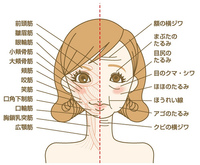
Este artículo me recordó al Beauty Smile Trainer (que se metía en la boca para enseñarte a sonreir) o al libro para todos los púbicos (todo un ensayo antropológico sobre el “hairstyle” inguinal de las japonesas), todos ellos objetos clave para la evolución humana. Las perturbadoras imágenes que ilustran esta entrada han sido obtenidas de este sitio web, donde podéis comprar este maravilloso artilugio por el precio oficial que indica el cartel: 3990yenes (pulsa sobre el precio para verlo en Euros según el cambio actual), fijaos qué feliz está la mujer de abajo a la derecha diciendo las vocales en la bañera: A, I, U, E, O… 
Año nuevo chino en Tianjin（天津で旧正月）
2012-01-26T13:15:06Z
Aunque son los miércoles los días que hablo de mis aventuras fuera de Japón y hoy es jueves, voy a hacer una excepción por ser el año nuevo chino, y es que la primera vez que viví uno en China, no fue ni en Macao, ni en Beijing, ni en Guangzhou, si no que disfruté [...]
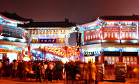
Aunque son los miércoles los días que hablo de mis aventuras fuera de Japón y hoy es jueves, voy a hacer una excepción por ser el año nuevo chino, y es que la primera vez que viví uno en China, no fue ni en Macao, ni en Beijing, ni en Guangzhou, si no que disfruté del año nuevo chino en Tianjin. Una encantadora ciudad del tamaño de Madrid a 111Kms al sureste de la capital china a la que se puede acceder fácilmente en tren rápido.
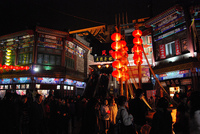
Ya escribí sobre ella en esta entrada, pero luego no volví a hablar porque apenas estuve 24 horas en ella, pero la noche que estuve me encantó, fue en el momento mas álgido del fín de año lunar y las calles del casco antiguo estaban preciosas, iluminadas con farolillos rojos y figuras luminosas con la forma del animal de aquel año: el Buey (o la vaca).
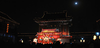
A pesar del frío la gente salió a disfrutar de estas fechas, equiparables a nuestras navidades por el ambiente familiar y festivo, aunque las costumbres y el simbolismo es totalmente diferente, algún día hablaré más detenidamente de las tradiciones chinas para esta época. Las calles estaban llenas y en pasos estrechos se andaba con dificultad, en las zonas más masificadas policía y voluntarios organizaban a la gente, pero yo lo recuerdo con mucho encanto, seguramente si hubiera ido con otra persona o con un grupo hubiéramos tenido que estar pendientes unos de otros entre tanta gente.
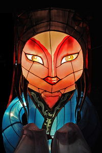
Entré en una casa de té del barrio antiguo, me senté cerca de uno de los ventanucos, hacía frío y nadie quería sentarse allí, a mi bastaba el té de jazmín y ese calor que sientes cuando estás disfrutando al máximo de un viaje para estar reconfortado. Observé durante minutos el entorno y la multitud desde fuera, alguien me saludó con algo parecido a un “Hello”, a un par de chicos de más o menos mi edad que iban a salir del establecimiento les hacía gracia ver a un extranjero allí tomando té e intentaron hablar conmigo, pero la comunicación fue imposible y nos limitamos a saludarnos con el brazo. Volví a mirar por la ventana, esta vez para echar una foto, y salí del establecimiento.
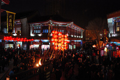
Volví por una calle paralela, un poco más despejada de gente, quizá por que muchos se amontonaban a los lados atraídos por los olores de las comidas que allí se preparaban. Destacaba una mesa con golosinas del lugar, que era la prolongación de una tienda dónde se fabricaban artesanalmente. Estaba lleno de chiquillos que elegían unidades de diferentes sabores hablando unos sobre otros… probé por curiosidad unos pocos, ya que era bastante barato y resultaron ser demasiado dulces, así que no logré acabarmelos.
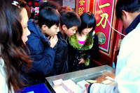
Ya casi salía de la galería comercial cuando la gente empezó a señalar al cielo, decenas de globos rojos ya volaban iluminando como pequeñas estrellas la noche. Justo a la salida veo que la gente sigue lanzando los globos de papel de color rojo o anaranjado, iluminados por la misma llama que los hace volar. Esto es propio las últimas celebraciones del año nuevo chino y representa un sol que emerge nuevo como la nueva etapa vital que llega con la primavera.
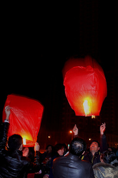
Durante unos minutos, la gente aún sigue lanzando “soles” al cielo, cuando acaban, me percato de que ya hay mucha menos gente en las calles. La multitud comienza a disolverse y una chica que está con su pareja me hace un esto con las manos emulando una cámara y señalando a los últimos farolillos que aún toman altura en el cielo… mientras sonríe, me hace entender que si he hecho muchas fotos de los mismos, asiento con la cabeza y se las muestro a ambos, me dan las gracias en inglés y me hablan en chino chapurreando les digo que no entiendo que no sé mandarín (y me vuelvo a jurar a mí mismo que algún día lo hablaré). Les hago una leve reverencia con el cuello y sonriendo yo también me despido.
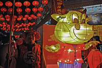
Así que, de nuevo volví a la galería, esta vez para dejarme seducir por uno de esos muchos olores, y decidir un lugar donde cenar acompañado de una cerveza china y del que se quiera sentar cerca mía…
¡¡ FELIZ AÑO NUEVO CHINO A TODOS !!
El aeropuerto de Tokyo Haneda
2012-01-20T06:58:42Z
El Aeropuerto de Tokyo Haneda es el segundo aeropuerto de Tokyo, utilizado mayormente para vuelos domésticos, aunque también tiene algunos vuelos internacionales, sobretodo a países cercanos, como a China, Taiwán o Corea (aunque también hay algún que otro vuelo a destinos de otros continentes). Lo que más me gusta de este aeropuerto es que está [...]
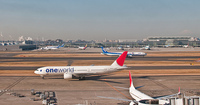
El Aeropuerto de Tokyo Haneda es el segundo aeropuerto de Tokyo, utilizado mayormente para vuelos domésticos, aunque también tiene algunos vuelos internacionales, sobretodo a países cercanos, como a China, Taiwán o Corea (aunque también hay algún que otro vuelo a destinos de otros continentes). Lo que más me gusta de este aeropuerto es que está relativamente cerca de la ciudad, ya que ir a Narita se me hace muy pesado.
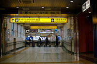
Por eso, cuando vuelo desde China o Hong Kong a Japón intento volar a Osaka-Kansai o Nagoya, pero si necesito ir a Tokyo, intento volar a este aeropuerto, ya que acceder al mismo desde cualquier punto de la capital nipona es bastante fácil, no tendréis problema desde los alojamientos de Tokio más populares. Basta con tomar la archiconocida línea Yamanote hasta Hamamatsucho y allí tomar el Tokyo monorail.
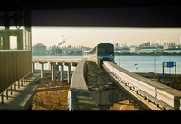
El aeropuerto en sí es simple pero my práctico, además, las esperas aquí, personalmente, se me hacen bastante cortas ya que tienes bastantes alternativas para entretenerte mientras esperas para facturar o para embarcar. Por ejemplo, en la parte superior hay un mirador donde se pueden hacer fotografías a los aviones y las pistas. Siempre está lleno de japoneses con unas lentes impresionantes haciendo fotos.
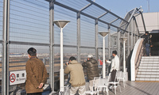
En el interior, además de las sempiternas máquinas expendedoras, y los típicos bares y restaurantes de aeropuerto, tenemos las zonas de conexión a internet, como ya comenté con los casos del aeropuerto de Nagoya o el de Narita (también en Tokyo), son como unas cabinas donde además de conectarte gratuitamente puedes enchufar tu ordenador a la red eléctrica.
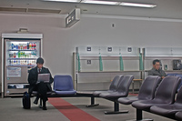
Muchos viajeros llegan por otros aeropuertos y luego se mueven dentro de Japón con el JRPass y no conocen el de Haneda, así que no podía dejar de mencionarlo en el blog. Para más información, aquí tenéis el link a la web oficial.
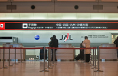
¡¡ FELIZ FIN DE SEMANA A TODOS !!
Okinawa Soba ( 沖縄そば )
2012-01-13T07:24:17Z
Para despedir la semana vuelvo a mis post gastronómicos, con un plato típico del archipiélago okinawense, se trata de la sopa de fideos local, llamada Okinawa Soba (沖縄そば), uno de mis platos favoritos en Japón. En la foto de arriba podéis verlo acompañado de arroz y una cerveza Orion, también propia de Okinawa. En la [...]
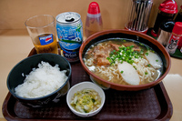
Para despedir la semana vuelvo a mis post gastronómicos, con un plato típico del archipiélago okinawense, se trata de la sopa de fideos local, llamada Okinawa Soba (沖縄そば), uno de mis platos favoritos en Japón. En la foto de arriba podéis verlo acompañado de arroz y una cerveza Orion, también propia de Okinawa. En la foto inferior podéis verla más de cerca y fijaros en los ingredientes: básicamente cebollino verde picado, kamaboko (que es lo blanco, una pasta de pescado) y Sōki (ソーキ), costillas de cerdo cocidas. Aunque en diferentes zonas puede variar.
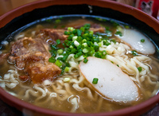
Los fideos suelen ser planos (aunque en algunas islas los hacen redondos) y son diferentes a los que estamos acostumbrados en el resto de Japón, si recordáis, cuando hablé de los diversos tipos de fideos japoneses, os dije que la soba eran fideos más oscuros, en cambio, estos son de color claro y más gruesos de lo normal. El caldo en cambio, se me asemeja bastante más al de el ramen, aunque no es exactamente igual. Todo esto en conjunto hace que este plato sea especialmente sabroso. ¿Os gustaría probarlo?
¡¡FELIZ FIN DE SEMANA A TODOS !!